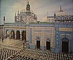

For several centuries in the first millennium B.C. and in the first five centuries of the first millennium A.D., western portions of Sindh, the regions on the western flank of the Indus river, were intermittently under Persian, Greek, and Kushan rule,[citation needed] first during the Achaemenid dynasty (500–300 BC) during which it made up part of the easternmost satrapies, then, by Alexander the Great, followed by the Indo-Greeks, and still later under the Indo-Sassanids, as well as Kushans, before the Islamic invasions between the 7th–10th century AD. Alexander the Great marched through Punjab and Sindh, down the Indus river, after his conquest of the Persian Empire. Sindh was one of the earliest regions to be influenced by Islam after 632 AD. Before this period, it was heavily Hindu, and Buddhist. After 632 AD, it was part of the Islamic empires of the Abbasids and Umayyids. Islam. Habbari, Soomra, Samma, Arghun dynasties ruled Sindh.
The region received its name, Sindh, from the River Sindhu (Indus). The people living in the region are referred to as Sindhi. The terms Hindi and Hindu are derived from the word Sindh and Sindhu, as the ancient Persians pronounced "s" as "h" (e.g., sarasvati as harahvati). In the same way, Persians called the people of this region as Hindhi people, their language as Hindhi language and the region as Hindh, the name which is used for this region since ancient times, and later for the whole northern part of the Indian sub-continent today. India is also known as Hindustan. The two main and highest ranked tribes of Sindh are the Soomro — descendants of the Soomro Dynasty, who ruled Sindh during 970–1351 A.D. and the Samma — descendants of the Samma Dynasty, who ruled Sindh during 1351–1521 A.D. These tribes belong to the same blood line. Among other Sindhi Rajputs are the Bhachos, Bhuttos, BhattisBhanbhro Mahendros, Buriros, Lakha, Sahetas, Lohanas, Mohano, Dahars, Indhar, Chachar, Dhareja, Rathores, Dakhan, Langah, etc. The Sindhi-Sipahi of Rajasthan and the Sandhai Muslims of Gujarat are communities of Sindhi Rajputs settled in India. Closely related to the Sindhi Rajputs are the Jats of Sindh, who are found mainly in the Indus delta region. However, tribes are of little importance in Sindh as compared to in Punjab and Balochistan. Identity in Sindh is mostly based on a common ethnicity.
Abida Parveen is a Pakistani singer of Sindhi descent and one of the foremost exponents of Sufi music. With Sindh’s stable prosperity and its strategic geographical position, it was subject to successive conquests by foreign empires. In 712 A.D., Sindh was incorporated into the Caliphate, the Islamic Empire, and became the ‘Arabian gateway’ into India (later to become known as Bab-ul-Islam, the gate of Islam).Muslim Sindhis tend to follow the Sunni Hanafi fiqh with a substantial minority being Shia Ithna 'ashariyah. Sufism has left a deep impact on Sindhi Muslims and this is visible through the numerous Sufi shrines which dot the landscape of Sindh.
